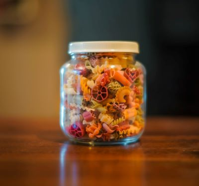

Nos produits
Tous nos produits sont disponibles uniquement en vrac. Vous pourrez emporter vos achats dans des sacs en papier recyclables, dans des sacs en tissu réutilisables (vendus en magasin) ou dans des petits bocaux (également vendus en magasin)!
Pour les novices du zéro-déchet, voici quelques exemples de produits que vous pourrez trouver en magasin :
Produits alimentaires
- Aide pâtisserie
- Biscuits
- Petit-déjeuner
- Céréales
- Pâtes
- Farine
- Voir plus
Produits non-alimentaires
- Linge
- Ménage
- Hygiène
- Vaisselle
- Voir plus
Nos valeurs
Chez Les Petits Bocaux nous avons la conviction qu'éliminer les emballages, c'est déjà un gros coup de pouce pour notre planète. Cela vous permet de réduire significativement le poids total de vos poubelles ménagères, mais aussi de limiter le gaspillage alimentaire en ne consommant que ce dont vous avez besoin.
Au delà du zéro-déchet, nous sommes également engagés pour le bio et nous privilégions le local afin de soutenir nos producteurs et vous proposer des produits de nos régions. Enfin, nous refusons les OGM et le transport par avion pour aller plus loin dans la protection de notre planète.
Consommer est un choix !
Nos magasins
Retrouvez nous dans tous nos points de vente !
 Les Petits Bocaux à Paris
Les Petits Bocaux à Paris